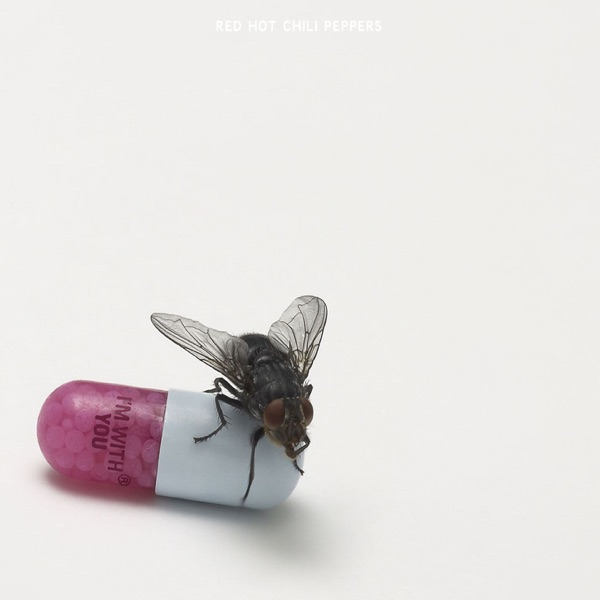
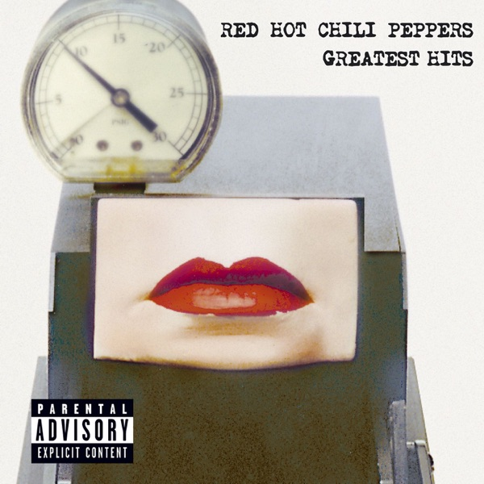
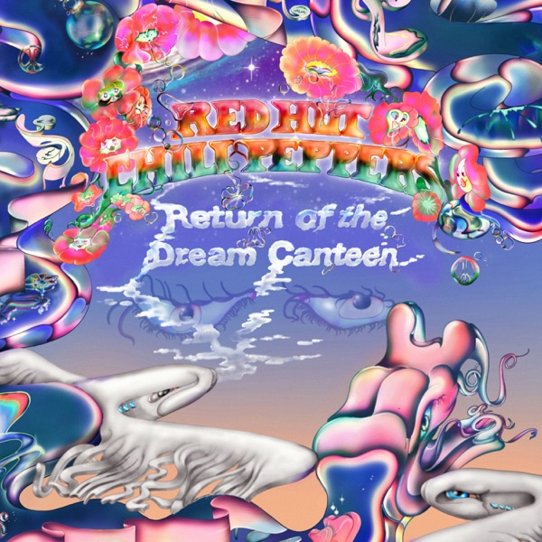
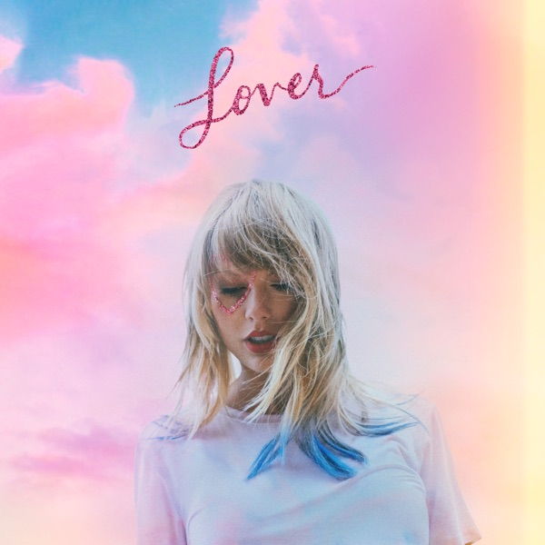
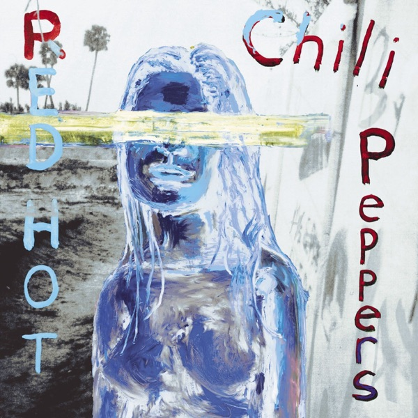

Code
library(tidyverse)
# Load metadata and pairwise similarity metrics
albums <- read_csv("album_metadata.csv", show_col_types = FALSE)
pairs <- read_csv("album_similarity_pairs.csv", show_col_types = FALSE)Comparing Taylor Swift and Red Hot Chili Peppers artwork by color and design
Album covers were analyzed across two visual dimensions:
Scores range from -1.0 (complete opposites) to +1.0 (virtually identical).
Browse the newly added 1,000 Pop Albums Catalog featuring searchable releases and cover artwork thumbnails.
These pairs share matching color palettes, tone, and visual structure.
Overall Similarity: 77.8% | Color: 90.4% | Design: 65.1%
Overall Similarity: 66.8% | Color: 95.8% | Design: 37.8%


Overall Similarity: 63.6% | Color: 90.4% | Design: 36.8%
These pairs contrast drastically in both palette (vibrant psychedelic vs. stark monochrome) and design density.
Overall Similarity: -7.6% | Color: 17.2% | Design: -32.4%

Overall Similarity: -11.8% | Color: 37.6% | Design: -61.2%

Overall Similarity: -12.6% | Color: 9.8% | Design: -34.9%

Which album from Taylor Swift is most visually akin to a Red Hot Chili Peppers album?
Similarity: 63% (Color: 61.7%, Design: 64.4%)
Both covers feature neutral, muted palettes with central figures framed against soft, earthy backdrops.
| Artist | Album | Release Date |
|---|---|---|
| Taylor Swift | Lover | 2019-08-23 |
| Taylor Swift | THE TORTURED POETS DEPARTMENT: THE ANTHOLOGY | 2024-04-19 |
| Taylor Swift | folklore | 2020-07-24 |
| Taylor Swift | Midnights | 2022-10-21 |
| Taylor Swift | Red | 2021-11-12 |
| Taylor Swift | evermore | 2020-12-11 |
| Taylor Swift | Fearless | 2021-04-09 |
| Taylor Swift | The Life of a Showgirl + “A Look Behind the Curtain” | 2025-10-03 |
| Taylor Swift | Speak Now | 2023-07-07 |
| Taylor Swift | reputation | 2017-11-10 |
| Red Hot Chili Peppers | I’m with You | 2011-08-26 |
| Red Hot Chili Peppers | Greatest Hits | 2003-11-18 |
| Red Hot Chili Peppers | The Getaway | 2016-06-17 |
| Red Hot Chili Peppers | Blood Sugar Sex Magik | 1991-09-24 |
| Red Hot Chili Peppers | Stadium Arcadium | 2006-05-09 |
| Red Hot Chili Peppers | Unlimited Love | 2022-04-01 |
| Red Hot Chili Peppers | Californication | 1999-06-08 |
| Red Hot Chili Peppers | By the Way | 2002-07-09 |
| Red Hot Chili Peppers | Return of the Dream Canteen | 2022-10-14 |
| Red Hot Chili Peppers | Rock & Roll Hall of Fame Covers - EP | 2012-05-01 |